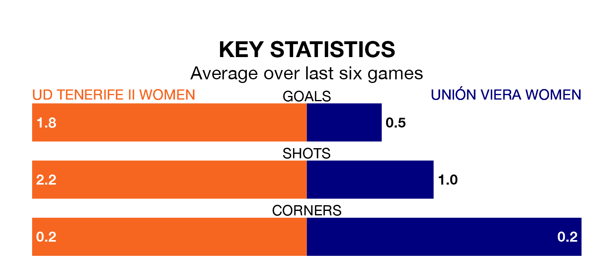

Two of the Segunda Federación Femenina's top sides face each other in Sunday lunchtime's kick-off, when third-placed UD Tenerife II Women host zero-placed Unión Viera Women.
Tenerife II Women have picked up 14 wins and eight draws from 23 games so far this season, and sit 27 points above the visitors going into the 12pm match.
Unión Viera, meanwhile, have won five and drawn eight, picking up 23 points.
With 40 goals in 23 games so far this season, Tenerife II Women are scoring more than average in the league with 1.7 goals per game. And they are conceding fewer than average, letting in 10 goals at a rate of 0.4 per game.
Unión Viera, meanwhile, are below average scorers, with 0.9 goals per game, compared to a league average of 1.2. They have conceded 1.6 goals per game.
The hosts are in fantastic form in the Segunda Federación Femenina, with five wins and a draw from their last six games.
With two wins and three draws over that period, the away side's form is much worse – they have taken nine points from 18, compared to Tenerife II Women's 16.
Tenerife II Women's last match was on March 10, a 1-0 win against CFF Albacete, with getting the goal for Tenerife II Women.
Unión Viera drew 0-0 with Málaga Women last time out, also on March 10.
Updated: 15:10 (UTC), 15/03/24